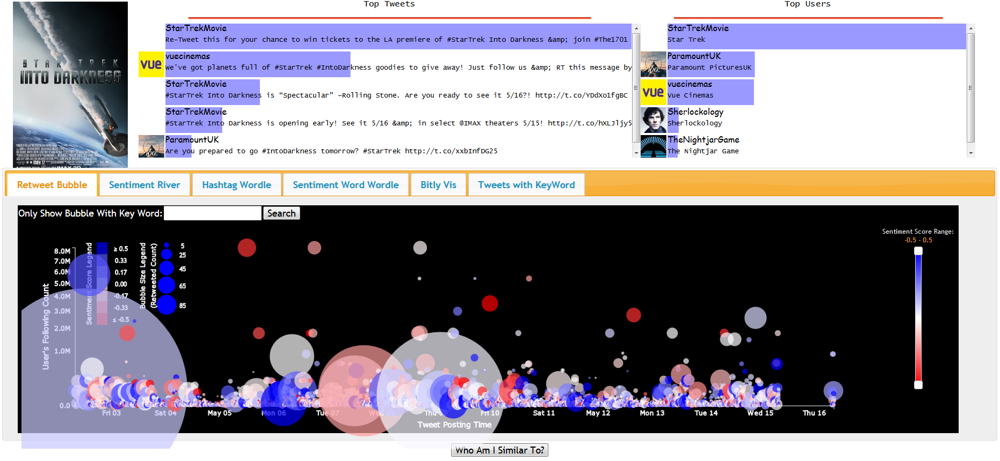
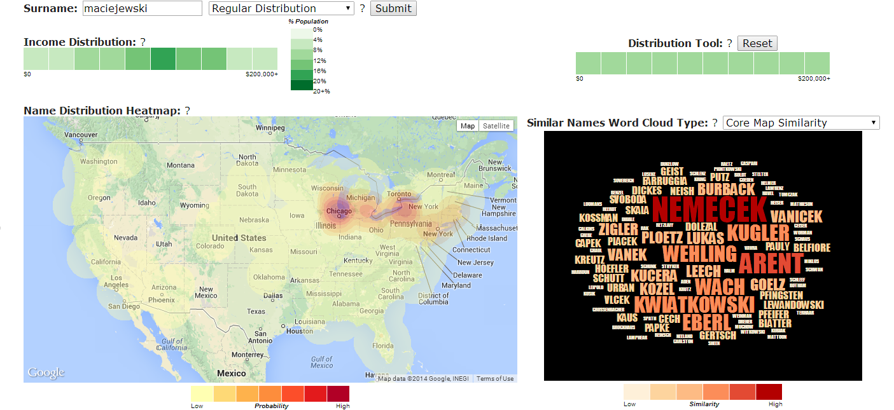
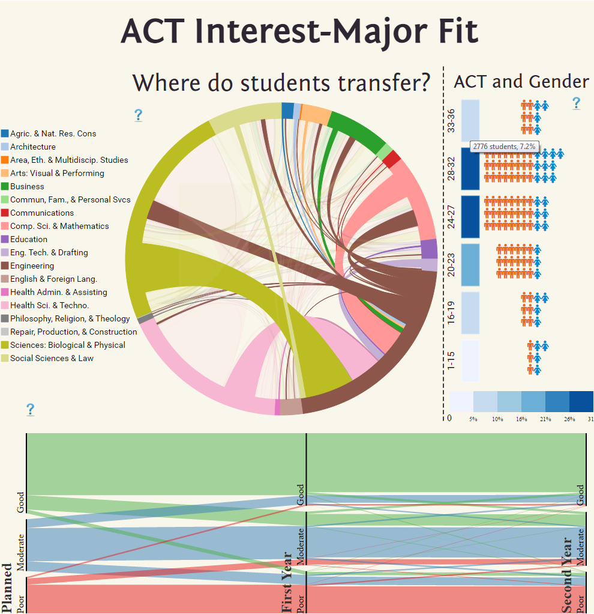

|
I am a PhD. candidate in Computer Science at Arizona State University, working with Prof. Ross Maciejewski. My research in visual analysis focuses on visual analysis on spatial data. Before entering ASU, I obtained my MS and BS degree from University of Science of Technology of China (USTC) and Shandong University (SDU) respectively. |
Information Curriculum Vitae Contact 480.385.8546 fwang49 at asu.edu BYENG 342AF(PRISM LAB) |
|

|
Box Office Visual prediction We developed a system for visual prediction of box office. This project is based on the twitter and bitly data provided by VAST 2013 Mini Chanllenge Team. We provided various linked views to adjust the linear regression model. This project was recognized as "Excellent Visual Analysis of Structured and Unstructured Data" award in VAST mini-chanllenge 1. Yafeng Lu, Feng Wang, Ross Maciejewski. VAST 2013 Mini-Challenge 1: Box Office VAST - Team VADER. Proceedings of the IEEE Conference on Visual Analytics Science and Technology, October 2013. [PDF][Video] Yafeng Lu, Feng Wang, Ross Maciejewski. Business Intelligence from Social Media: A Study from the VAST Box Office Challenge. IEEE Computer Graphics and Applications,34(5): 58-70, 2014. [PDF] Yafeng Lu, Robert Kruger, Dennis Thom, Feng Wang, Steffen Koch, Thomas Ertl, Ross Maciejewski. Integrating Predictive Analytics and Social Media. Proceedings of the IEEE Conference on Visual Analytics Science and Technology, 2014. [PDF][Video] |
 |
Surname Search This project explores the development of a visual analytics tool for geodemographic exploration in an online environment. We mine 78 million records from the United States public telephone directories, link the location data to demographic data (specifically income) from the United States Census Bureau, and allow users to interactively compare distributions of names with regards to spatial location similarity and income. In order to enable interactive similarity exploration, we explore methods of pre-processing the data as well as on-the-fly lookups. As data becomes larger and more complex, the development of appropriate data storage and analytics solutions has become even more critical when enabling online visualization. We discuss problems faced in implementation, design decisions and directions for future work. Feng Wang, Jose Ibarra, Adnan Muhammad, Paul A. Longley, Ross Maciejewski. What's in a Name? Data Linkage, Demography and Visual Analytics. EuroVis Workshop on Visual Analytics, June, 2014. [PDF][Demo][Video] |
 |
ACT Interest-Major Visualization In this visualization, we investigated how students transfer between majors and the impact of interest on possible career performance. [Demo] |